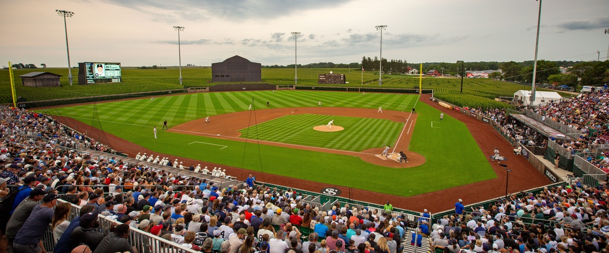

MLB nailed 'The Field of Dreams' Game!
Jan. 2, 2022
On Wednesday night, we saw Kyrie Irving play his first NBA game since June 10th.
The Chicago White Sox defeated the New York Yankees on a walkoff home run in what will likely be remembered as the best regular-season game of the 2021 MLB season.
The NHL has been smart to implement the Winter Classic and Stadium Series to its regular season and finally, Major League Baseball thought outside the box and played a game at a neutral site.
Last night, the White Sox knocked off the Yankees 9-8 at the site of the well-known "Field of Dreams" movie in Dyersville, Iowa. It wasn't just that it was the first MLB game played in Iowa or that it was at the site of the famous movie.
Everything that went into making this game a reality and the intrigue from neutral fans (myself included) should indicate to the league's front office that this was a monstrous success and should be replicated in years to come in different locations.
Not only was the game at 'The Field of Dreams' incrediblyt competitive, but seeing hiome run balls launched into a cornfield was such a cool and unique way to watch.
Hats off MLB! Keep doing things like this to draw neutral viewers!